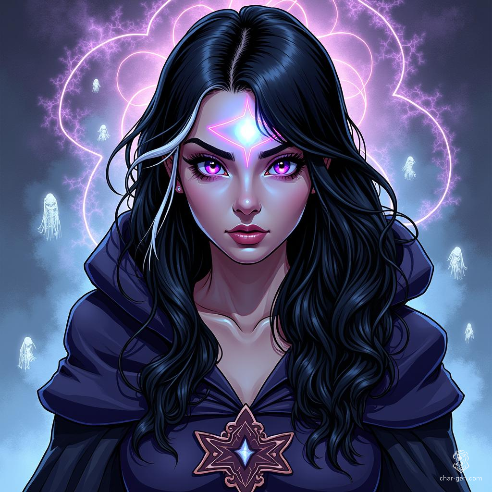

Mystic Eye: Guardian of the Supernatural Veil

Salem's Mystical Daughter
Evelyn "Eve" Nightshade was born in Salem, Massachusetts, a
city steeped in supernatural history. Her parents, Amelia
and Victor Nightshade, were deeply embedded in the world of
the arcane—her mother a professor of occult studies at
Miskatonic University, her father a rare book collector
specializing in magical texts.
From childhood, Eve displayed an uncanny sensitivity to the supernatural. While other children saw empty rooms, she perceived shimmering beings and unseen presences. Her parents recognized these abilities as more than childhood imagination and began nurturing her latent magical talents.
The Sorcerer's Apprentice
At 13, Eve began studying under Dr. Stephen Strange, the
Sorcerer Supreme. During an early training exercise, she
accidentally activated her "Mystic Eye"—a supernatural
sensory ability that allowed her to perceive magical
energies with extraordinary clarity. The incident left a
permanent white streak in her raven-black hair, a physical
marker of the cosmic power she channeled.
Strange saw potential in Eve beyond traditional magical training. He taught her not just spellcraft, but also the critical responsibility of wielding supernatural power. She mastered signature techniques like the Bolts of Balthakk and the Icy Tendrils of Ikthalon, eventually developing her own unique approach to magical combat.
The Paranormal Investigator
After completing her initial training, Eve pursued a dual
path of magical and scientific study. At Miskatonic
University, she honed her methodical approach to
supernatural investigation. Her friendship with Zoe Chen—a
technomancer—helped her merge technological and mystical
strategies for tackling paranormal cases.
Her breakthrough came during an investigation of the Old North Church in Boston. What began as a routine ghost-hunting mission revealed a centuries-old magical seal protecting a powerful artifact. Eve’s intervention prevented a group of dark magic users from seizing it, catching the attention of the Avengers.
The Academy's Mystical Recruit
Captain Marvel recognized Eve’s rare capabilities and
extended an invitation to the Boston Avengers Academy.
Initially hesitant to join a structured hero program, Eve
eventually recognized the value of formal training and
teamwork.
At BAA, she learned to integrate her arcane abilities into team strategies. Courses like "Superhero Ethics" and "Exploring Your Superpowers" deepened her understanding of the broader implications of wielding magic. Her Mystic Eye ability, which allowed her to detect hidden magical energies, proved invaluable during team exercises.
Magical Challenges
Eve’s precision in magical combat and her analytical
approach quickly earned her a reputation for handling
supernatural threats. Her Mystic Eye gave her an edge in
revealing weaknesses in spells or detecting hidden dangers.
But such powers came with a cost. Constant exposure to
otherworldly energies sometimes blurred her perception of
the physical world, making her worry that prolonged use of
magic might erode her sense of self.
Present Day
Now a Probationary Avenger, Eve remains true to her
independent spirit while operating as part of the BAA team.
She continues to explore paranormal cases using a balanced
approach of science and sorcery, aiming to compile a
comprehensive guide to supernatural phenomena.
Her quarters at the Academy reflect this dual focus—magical artifacts mix freely with scientific apparatus, forming a workspace that bridges both worlds. As Mystic Eye, Evelyn Nightshade stands guard over the thin veil separating the mundane from the mystical, using her extraordinary gifts to protect Boston against threats beyond ordinary perception.